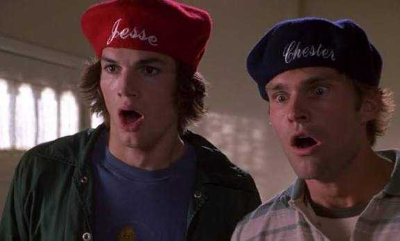

🚗❓DUDE Where’s My Car (2000) — CERTIFIED MGC G-7

🏛 MGC LOWER COURT OF APPEALS
- ASSET TITLE: Dude, Where’s My Car? (2000)
- OFFICIAL REGISTRY GRADE: Certified MGC G-7 (Good / Heavily Circulated Cult Alloy)
- LOWER COURT JURISDICTION: Judge Tina (Chief of Cult Classics)
- CASE FILE: #098
📜 CASE SUMMARY
Tina walks up 👢👢 to the cold steel bench, tosses an empty energy drink can into the trash can 🗑, and dials her 5x magnifying lens onto Case File #098.
- Evaluated under the MGC 5x lens, Danny Leiner’s 2000 stoner comedy functions less as a tight narrative and more as a series of disconnected sketch-comedy vignettes—moving from alien cults to drive-thru intercoms with minimal structural cohesion. While the plot suffers from heavy logic leaks and juvenile gags, Ashton Kutcher and Seann William Scott rescue the film from lower-tier grades through their genuine buddy-comedy chemistry and committed deadpan performances.
Due to its high midnight-movie rewatchability and iconic Y2K cultural footprint, it earns a G-7 rating.
1. Sketch-Comedy Fragmentation & Zero Narrative Chassis
- Under our strict 5x numismatic magnifying lens, Danny Leiner’s 2000 stoner comedy exhibits complete structural fragmentation across its 83-minute runtime. Rather than operating on a cohesive narrative engine, the screenplay welds together disconnected sketch-comedy detours—bouncing erratically from ostrich farms and transgender strippers to Nordic tracksuited aliens and a drive-thru speaker box. Every transition leaves deep narrative weld marks, turning the central mystery of the missing Renault LeBaron into a paper-thin excuse for random sight gags.
2. Dated Y2K Gross-Out Corrosion & Logic Leaks
- Inspecting the comedic surface under high magnification reveals noticeable early-2000s oxidation. While catchphrases like “Sweet!” and “Dude!” carry undeniable nostalgic eye appeal for midnight-movie collectors, large stretches of the humor rely on juvenile shock gags, sloppy continuity leaks, and broad caricature acting from the supporting villains. Without a coherent rulebook governing the Continuum Transfunctioner subplot, the third-act sci-fi escalation corrodes into pure cartoon noise.
3. High-Mileage Buddy Chemistry & Deadpan Delivery
- What rescues this heavily circulated specimen from the lower G-4 scrap heap and locks it firmly at G-7 is the locked-in lead metallurgy of Ashton Kutcher and Seann William Scott. Playing Jesse and Chester with wide-eyed, golden-retriever sincerity, the duo sells every absurd line reading without winking at the camera. Their effortless rhythmic timing and high-rewatchability cult luster keep the wheels turning smoothly even when the script runs completely out of gas.
⚖️ THE CHIEF’S FINAL DECREE
- Judge Tina rules that while the plot is virtually non-existent, Kutcher and Scott’s comedic momentum keeps the film rolling as high-mileage Y2K scrap.
- 🔧💥 🚗 Case Closed. Certified MGC G-7.

• © 2026 MOVIE GRADING CONSENSUS. All Sovereign Rights Reserved.